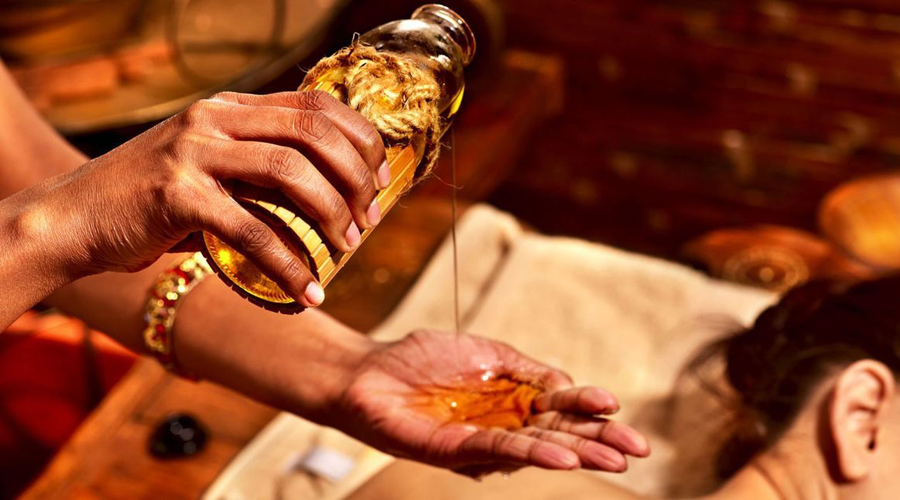
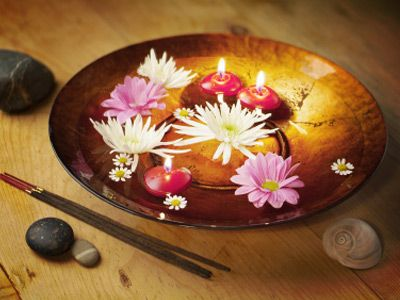

Indiai Fejmasszázs
Az indiai fejmasszázs egy különleges, egyszerre vérpezsdítő és relaxáló masszázs, amely hatékonyan enyhíti a fejfájásos tüneteket, stresszoldó és relaxáló hatású,
felpezsdíti a fejbőrt, ragyogóvá teszi a hajat és energiával tölti fel a testet és lelket.
Jótékony hatásai jóval a kezelés után is megmaradnak:
- Kitűnő stressz, feszültség- és depresszióoldó hatás
- Megnyugtat és kiegyensúlyozottá tesz
- Élénkíti a vérkeringést, így serkenti az agyműködést
- Hatásos fülzúgás, orrdugulás esetén
- Náthánál és arcüreggyulladásnál segíti a váladék kiürülését
- A szem túlerőltetésére gyógyír, javítja a szem működését
- Erősíti az immunrendszert
- Segít alvászavarok esetén
- Szépíti a bőrt és erősíti a hajat


Az indiai fejmasszázst nemcsak a fejbőrön végezzük: a kezelés arc-, skalp- és dekoltázsmasszázsból áll. A masszázs 100 százalékos természetességű kókuszolajjal történik, amely regenerálja a bőr sejtjeit, megelőzi a ráncok kialakulását, használata segít megőrizni a bőrünk fiatalságát.
A felélénkült vér- és nyirokkeringés tápanyaggal és oxigénnel látja el a masszírozott területeket. A természetes olaj antioxidánsokban gazdag, telített zsírjai a száraz bőrt hatásosan hidratálják és gátolják kiszáradását. Általános serkentő és stresszcsökkentő hatása mellett az indiai fejmasszírozás a hajas fejbőr energizálására is alkalmas.